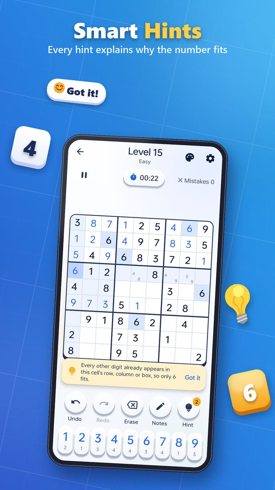

Quick answer: Sudoku is a 9×9 logic puzzle. Fill every empty cell so each row, each column and each 3×3 box contains the numbers 1 to 9 exactly once. No maths or guessing is needed: start with scanning and singles, use pencil notes on harder puzzles, then learn pairs, pointing and X-Wing.
Key facts
- Grid: 9 rows, 9 columns, 9 boxes
- Rule: 1 to 9 once in every row, column and box
- Beginner techniques: scanning, naked single, hidden single
- Advanced: naked pair, pointing, X-Wing
- A proper Sudoku has exactly one solution
The Rules of Sudoku
A Sudoku grid has 9 rows, 9 columns and 9 boxes of 3×3 cells. Some numbers are already filled in. Your job is to fill every empty cell so that:
- ➡️Each row has the numbers 1 to 9 exactly once.
- ⬇️Each column has the numbers 1 to 9 exactly once.
- 🔲Each 3×3 box has the numbers 1 to 9 exactly once.
🧠 No guessing needed. A well-made Sudoku has exactly one solution, and you can reach it with logic alone. Every puzzle in Sudoku Play has exactly one solution.
Beginner Techniques
1. Scanning
Pick a number, say 5. Look at every row and column that already has a 5. In a box without a 5, cross out the cells in those rows and columns. If only one cell is left, the 5 goes there.
2. Naked single
Look at one empty cell. Check its row, column and box. If 8 of the 9 numbers are already used there, the missing one is the only number that fits.
3. Hidden single
Look at one row, column or box. If a number can only go in one cell of that group, it must go there, even if that cell has other candidates too.
Use Pencil Notes
On harder puzzles, write the possible numbers (candidates) in small print inside each cell. When you place a number, remove it from the notes in the same row, column and box. Sudoku Play does this clean-up for you automatically.
Intermediate and Advanced Techniques
- 👯Naked pair: two cells in the same row, column or box have the same two candidates, like 3 and 7. Those numbers must go in those two cells, so remove 3 and 7 from the other cells in that group.
- 👉Pointing: inside one box, a candidate appears only in one row (or column). The number must be in that line inside the box, so remove it from the rest of that row (or column) outside the box.
- ✖️X-Wing: a candidate appears in exactly two cells in each of two rows, and those cells are in the same two columns. The number must sit in two opposite corners of that rectangle, so remove it from the rest of those two columns.


Tips for Beginners
- 🟢Start with Easy puzzles and move up when they feel quick.
- 🔍Look for the most-filled groups first. A row with 7 numbers is easier than one with 3.
- ✏️Never guess. If you're stuck, use notes and look for a single or a pair.
- ↩️Don't fear mistakes. Undo lets you take a step back and try again.
- 💡Learn from hints. A good hint tells you why a number fits, so you can spot it yourself next time.
Practise with Sudoku Play
Sudoku Play is a free, offline Sudoku game with a 100-level campaign from Easy to Expert. Its hints explain the technique behind each step, from simple singles to pairs, pointing and X-Wings. It also has an interactive tutorial, pencil notes, unlimited undo, six themes and night mode.
Frequently Asked Questions
What are the rules of Sudoku?
Fill the 9×9 grid so every row, every column and every 3×3 box contains the numbers 1 to 9 exactly once.
Do you need to be good at maths for Sudoku?
No. Sudoku uses numbers as symbols. It's a logic puzzle, so there is no adding or multiplying.
What is the easiest Sudoku technique?
Scanning and the naked single. Find a cell or a group where only one number can fit.
Is there a good offline Sudoku app for beginners?
Sudoku Play has a guided tutorial, hints that explain why a number fits and 100 levels from Easy to Expert. It plays offline.
One Puzzle a Day
100 levels, smart hints and six themes. Free and offline on Google Play.